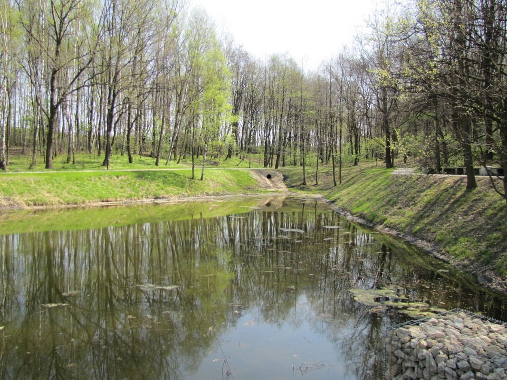
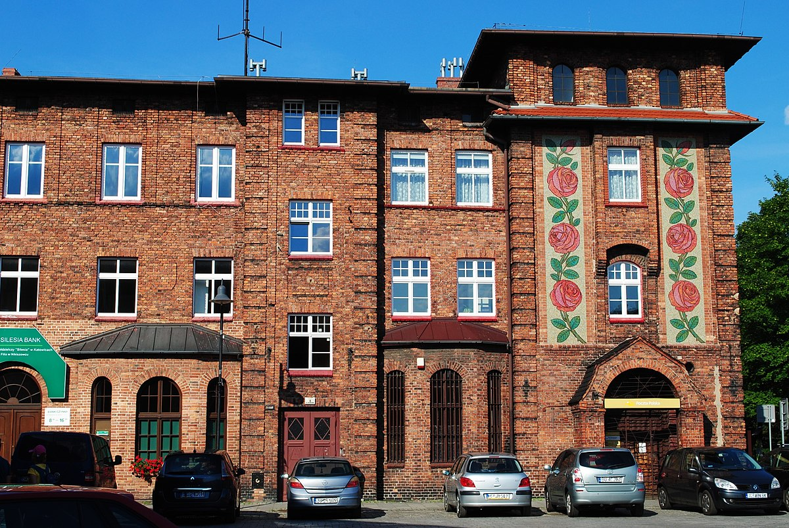
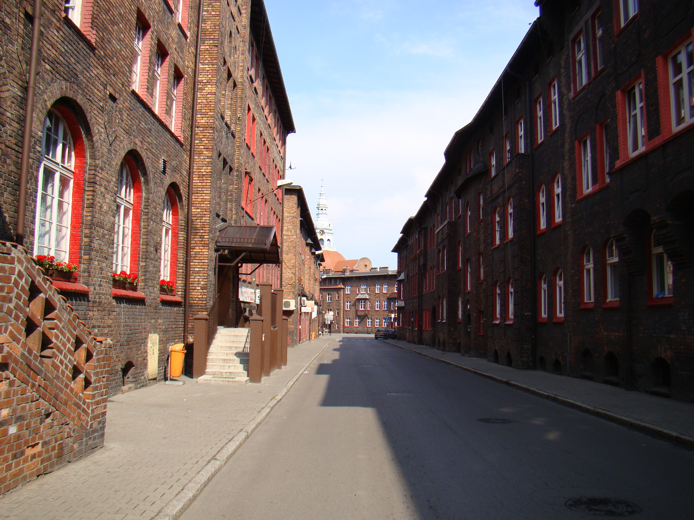

a
Katowice
Katowice miasto na prawach powiatu w południowej Polsce, siedziba władz województwa śląskiego.
Ciekawe miejsca
Kopalnia Guido - dziś nieczynna kopalnia węgla kamiennego, udostępniona do zwiedzania. Zwiedzanie Kopalni Guido możliwe jest na dwóch poziomach 170, 320 i podpoziomie 355. Podczas zwiedzania można zobaczyć jak działa elektryczna maszyna wyciągowa z 1927 roku, zjechać do podziemi szolą (windą) górniczą. Trasy obejmują podziemne wyrobiska z czasów prowadzenia eksploatacji na Kopalni „Guido”
Źródło: Plik:Guido coal mine Hindenburg Zabrze.jpg - https://pl.wikipedia.org
Źródło: Plik:Kopalnia Guido - trasa 355, ściana nr 4.JPG - https://pl.wikipedia.org
Dolina Trzech Stawów
- park i kompleks rekreacyjno-sportowy[1], znajdujący się w Katowicach Źródło: Plik:KATOWICE, AB. 073.JPG - https://pl.wikipedia.org
Nikiszowiec
– zabytkowe osiedle w Katowicach w jednostce pomocniczej Janów-Nikiszowiec, powstałe w latach 1908–1919 z inicjatywy koncernu górniczo-hutniczego. Posiada bardzo charakterystyczną zabudowę wykonaną głównie z czerwonej cegły przez co klimatem nawiązuje do uroczych angielskich dzielnic ale w nieco zimniejszym wydaniu  Źródło: Plik:Janów-Nikiszowiec II 054.jpg - https://pl.wikipedia.org
Źródło: Plik:Katowice, układ urbanistyczno-przestrzenny osiedla robotniczego Nikiszowiec 01.JPG -
https://pl.wikipedia.org